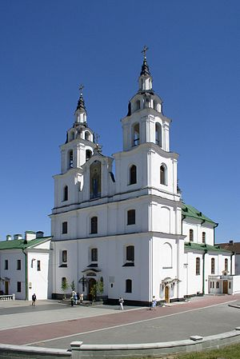

- Home
- Culture
- History
- tourism
- etc
언어의 개요
이 언어는 우크라이나어, 폴란드어, 러시아어와 비슷한 어휘가 많고 리투아니아어, 라트비아어에서도 약간의 차용어가 들어왔다.
주 사용국인 벨라루스마저 러시아어를 더 선호하며 동슬라브어군에서 2번째로 적게 쓰이는 언어가 되었고,
이 언어가 자연적으로 소멸할 것이라는 추측도 나오고 있다. 우크라이나 및 러시아에서도 소수의 벨라루스인들이 이 언어를 사용하는데,
러시아는 이 언어를 없애고 러시아어를 보급하려는 시도도 있었다고 한다.
러시아어와 다른 점을 예로 하나 들자면 단어 '언어'는 러시아어로
"야지크"(язык), 벨라루스어로는 우크라이나어랑 비슷하게 "모바"(мова) 라고 한다
벨라루스 문자표
| А а
|
Б б
|
В в
|
Г г
|
Д д
|
(Дж дж)
|
(Дз дз)
|
Е е
|
| Ё ё
|
Ж ж
|
З з
|
І і
|
Й й
|
К к
|
Л л
|
М м
|
| Н н
|
О о
|
П п
|
Р р
|
С с
|
Т т
|
У у
|
Ў ў
|
| Ф ф
|
Х х
|
Ц ц
|
Ч ч
|
Ш ш
|
Ы ы
|
Ь ь
|
Э э
|
| Ю ю
|
Я я
|
기본 문장들
- дзень добры (dzen' dobry) - 안녕하세요?
- як (jak) - 어떻게
- як маесься? (jak majessija?) - 잘 지냈습니까?/어떻게 지내셨습니까?
- добрай раніцы (dobraj ranicy) - 아침인사
- дабранач (dabranach) - 안녕히 주무세요.
- дзякуй (dzjakuj) - 고마워요.
- калі ласка (kali laska) - ~해 주세요
- спадар / спадарыня (spadar / spadarynja) - ~씨(남성/여성)
- добра (dobra) - 좋다
- кепска / дрэнна (kjepska / drenna) - 나쁘다
- выдатна (vydatna) - 멋지다, 훌륭하다
- цудоўна (cudowna) - 멋지다, 훌륭하다
- дзе (dzje) - 어디?
- адкуль (adkul') - 어디에서?
- чаму (chamu) - 왜?
- я разумею (ja razumjeju) - 전 이해합니다.
- нічога не разумею (nichoha nie razumjeju) - 전 아무것도 이해하지 못합니다.
종교
종교는 벨라루스 정교회가 대부분이다.
하지만 구소련의 영향으로 무종교인도 많다.
그 외 가톨릭교, 개신교, 유대교, 이슬람교 등을 믿고 있다(1997년 추계)
벨라루스 정교회
벨라루스에 있는 러시아 정교회이며, 공식적인 명칭은 벨라루스 대교구(러시아어: Белорусский экзархат)이다.
벨라루스에 있는 러시아 정교회 교구들을 대표하는 연맹체이며, 동방 정교회 신자가 다수인 벨라루스에서 가장 큰 종교 단체이다.
현재 벨라루스 정교회의 수장은 관구장 주교 파벨 포노마료프이다.
벨라루스 정교회는 러시아 정교회 산하 반(半)자치 교회인 우크라이나 정교회와 비교했을 때 훨씬 작은 자치권을 누리고 있다.
벨라루스 정교회는 상대적으로 규모가 더 작은 데다가 교회 구성원 대다수가 이민자에 기반한 벨라루스 자치 정교회에 대해서 강력하게 반대하는 입장을 취하고 있다.

| 종교 구성 (벨라루스) |
|---|
|
|
|
|
|
| 동방 정교회 |
|
48.3% |
| 무종교 |
|
41.1% |
| 로마 가톨릭교회 |
|
7.1% |
| 이슬람교 |
|
0.2% |
| 기타 |
|
3.3% |